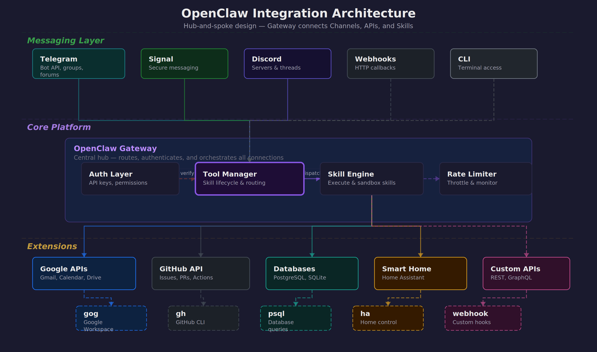

OpenClaw for Organizations 2026 — Series Navigation
🤖 AI ที่อยู่แค่ในแชทไม่เพียงพอ
ลองนึกภาพ: AI ที่ฉลาดแค่ไหนก็ตาม หากไม่สามารถเข้าถึงข้อมูลจริงในองค์กรได้ มันก็เป็นเพียง chatbot ที่แพงขึ้น การที่ AI จะมีประโยชน์จริงได้ มันต้องสามารถ:
- อ่าน-ส่ง email เพื่อติดตามงานและสื่อสารกับทีม
- จัดการ calendar สำหรับนัดหมายและ deadline
- Query database เพื่อหาข้อมูลและสร้าง insights
- ทำงานร่วมกับ GitHub สำหรับ code review และ deployment
- ควบคุม smart home เพื่อปรับสภาพแวดล้อมการทำงาน
- เชื่อมต่อกับ tools องค์กร ผ่าน APIs และ webhooks
นี่คือจุดแข็งหลักของ OpenClaw — มันไม่ได้เป็นแค่ AI assistant แต่เป็น integration platform ที่ให้ AI เข้าถึงและทำงานร่วมกับระบบจริงได้ครบวงจร
🏗️ Integration Architecture
OpenClaw ออกแบบมาให้เป็นสะพานเชื่อมระหว่าง AI และโลกจริง โดยมี architecture แบบ hub-and-spoke ที่ยืดหยุ่นและปลอดภัย:

Gateway ทำหน้าที่เป็นตัวกลางที่ปลอดภัย รับ requests จาก channels ต่าง ๆ แล้วส่งต่อไปยัง skills และ external APIs พร้อม authentication, rate limiting, และ logging ครบครัน
Tool Manager จัดการ lifecycle ของ skills ต่าง ๆ ทั้งการ install, update, permission control, และ resource monitoring เพื่อให้แน่ใจว่าระบบทำงานได้เสมอ
Channels รองรับการสื่อสารหลากหลายรูปแบบ — ตั้งแต่ messaging apps สำหรับ end users ไปจนถึง webhooks สำหรับ automated systems
💬 Messaging Channels — ประตูสู่ AI
OpenClaw รองรับ messaging channels หลากหลายรูปแบบ แต่ละตัวมีจุดแข็งและการใช้งานที่แตกต่างกันไป:
Telegram — ตัวเลือกยอดนิยม
Telegram เป็น channel ที่ได้รับความนิยมมากที่สุดเนื่องจากความยืดหยุ่นและ features ที่ครบครัน:
# การตั้งค่า Telegram Bot
# 1. สร้าง bot ผ่าน @BotFather
# 2. เพิ่ม configuration ใน openclaw.json
{
"channels": {
"telegram": {
"enabled": true,
"bot_token": "YOUR_BOT_TOKEN",
"allowed_users": [123456789, 987654321],
"groups": {
"team_chat": -1001234567890,
"alerts": -1009876543210
},
"forums": {
"project_threads": {
"chat_id": -1001111111111,
"topics": {
"bug_reports": 2,
"feature_requests": 3
}
}
}
}
}
}Private chats เหมาะสำหรับงานส่วนตัวและ sensitive operations
Groups ใช้สำหรับ team collaboration และ notifications
Forum topics ช่วยจัดระเบียบการสนทนาตามหัวข้อ
Signal — ความปลอดภัยสูงสุด
Signal มี end-to-end encryption ที่แข็งแกร่ง เหมาะสำหรับองค์กรที่ใส่ใจเรื่องความปลอดภัย:
{
"channels": {
"signal": {
"enabled": true,
"phone_number": "+66812345678",
"allowed_contacts": ["+66823456789"],
"device_name": "OpenClaw-Production"
}
}
}Discord — สำหรับทีมเทคนิค
Discord มี rich formatting และ bot ecosystem ที่เหมาะสำหรับทีมพัฒนาและ DevOps:
{
"channels": {
"discord": {
"enabled": true,
"bot_token": "YOUR_DISCORD_TOKEN",
"guild_id": "123456789012345678",
"channels": {
"general": "234567890123456789",
"alerts": "345678901234567890"
},
"roles": {
"admin": "456789012345678901",
"developer": "567890123456789012"
}
}
}
}Webhooks — สำหรับ Automation
Webhooks ช่วยให้ระบบภายนอกสามารถ trigger OpenClaw ได้โดยตรง เหมาะสำหรับ event-driven workflows:
# Webhook endpoint configuration
{
"webhooks": {
"github": {
"endpoint": "/webhooks/github",
"secret": "your-github-secret",
"events": ["push", "pull_request", "issues"]
},
"monitoring": {
"endpoint": "/webhooks/alerts",
"auth_token": "your-monitoring-token"
}
}
}
# ตัวอย่าง GitHub webhook ที่ trigger auto-review
curl -X POST https://your-domain.com/webhooks/github \
-H "X-GitHub-Event: pull_request" \
-H "X-Hub-Signature-256: sha256=..." \
-d '{"action": "opened", "pull_request": {...}}'📧 Google Workspace via gog CLI
Google Workspace เป็นหัวใจของการทำงานในองค์กรสมัยใหม่ OpenClaw ใช้ gog CLI เป็นตัวเชื่อมต่อที่ให้ความสามารถครบครันในการจัดการ email, calendar, drive, และ sheets:
Gmail Operations
การจัดการ email ไม่ใช่แค่การอ่านและส่งเท่านั้น แต่ต้องสามารถ search, filter, และ organize ได้อย่างฉลาด:
# ค้นหา emails ตามเงื่อนไขที่ซับซ้อน
gog gmail search "from:boss@company.com subject:urgent" \
--max-results 10 \
--format json
# ส่ง email พร้อม attachments และ CC
gog gmail send \
--to "team@company.com" \
--cc "manager@company.com" \
--subject "Weekly Report - $(date +%Y-%m-%d)" \
--body-file report.html \
--attach report.pdf \
--attach charts.xlsx
# อ่าน email ล่าสุดที่ยังไม่ได้อ่าน
gog gmail list --query "is:unread" --max-results 5 | \
jq '.[] | {subject: .subject, from: .from, date: .date}'
# Mark emails as read/unread และจัดการ labels
gog gmail modify \
--id "thread-id-here" \
--add-labels "IMPORTANT,PROCESSED" \
--remove-labels "INBOX"ตัวอย่างการใช้งานจริง: AI สามารถ monitor email จาก monitoring system แล้วสร้าง incident reports โดยอัตโนมัติ พร้อมส่งต่อให้ทีมที่เกี่ยวข้อง
Calendar Management
การจัดการ calendar ที่ดีต้องคำนึงถึง availability, conflicts, และ meeting preparation:
# ดูกำหนดการวันนี้
gog calendar list-events \
--calendar primary \
--time-min $(date -Iseconds) \
--time-max $(date -d "today 23:59:59" -Iseconds)
# สร้าง meeting ใหม่พร้อม attendees
gog calendar create-event \
--summary "Team Standup" \
--start "2024-03-15T09:00:00+07:00" \
--end "2024-03-15T09:30:00+07:00" \
--attendees "alice@company.com,bob@company.com" \
--description "Daily standup meeting" \
--location "Conference Room A"
# ตรวจสอบ free/busy ของทีม
gog calendar freebusy \
--calendars "alice@company.com,bob@company.com" \
--time-min "2024-03-15T08:00:00Z" \
--time-max "2024-03-15T18:00:00Z"
# Update หรือยกเลิก meeting
gog calendar update-event \
--event-id "event-id-here" \
--summary "Team Standup (Updated)"Google Drive Integration
Drive ไม่ใช่แค่ที่เก็บไฟล์ แต่เป็น collaboration hub ที่ AI สามารถจัดการและ organize ได้อย่างชาญฉลาด:
# Upload files พร้อม metadata และ sharing
gog drive upload /local/report.pdf \
--folder "Reports/2024/Q1" \
--name "Weekly Report - Week 11" \
--description "Generated by OpenClaw" \
--share-with "team@company.com:reader"
# ค้นหาไฟล์ตามเนื้อหาและ metadata
gog drive search \
--query "name contains 'budget' and modifiedTime > '2024-01-01'" \
--fields "id,name,modifiedTime,owners"
# Batch operations สำหรับการจัดระเบียบ
gog drive list --folder "Inbox" | jq -r '.[] | .id' | \
xargs -I {} gog drive move {} --destination "Archive/2024"
# สร้างและแชร์ folders สำหรับ projects
gog drive create-folder "Project Alpha" \
--parent "Active Projects" \
--share-with "alpha-team@company.com:writer"Google Sheets — Data Operations
Sheets เป็น lightweight database ที่ AI สามารถใช้สำหรับ tracking, reporting, และ simple data operations:
# อ่านข้อมูลจาก sheet
gog sheets read \
--spreadsheet "1BxiMVs0XRA5nFMdKvBdBZjgmUUqptlbs74OgvE2upms" \
--range "A1:E10" \
--format json
# เขียนข้อมูลลง sheet
echo "Date,Task,Status,Assignee" | \
gog sheets write \
--spreadsheet "spreadsheet-id" \
--range "A1:D1" \
--format csv
# Update ข้อมูลแบบ batch
gog sheets batch-update \
--spreadsheet "spreadsheet-id" \
--updates-file updates.json
# สร้าง charts และ pivot tables
gog sheets create-chart \
--spreadsheet "spreadsheet-id" \
--range "A1:C10" \
--chart-type "LINE"🐙 GitHub Integration — DevOps Automation
GitHub เป็น backbone ของการพัฒนา software ในองค์กร OpenClaw ทำให้ AI สามารถเข้าไปช่วยในทุกขั้นตอนของ development lifecycle:
Repository Management
การจัดการ repositories, branches, และ releases ที่ช่วยให้ทีมทำงานได้อย่างมีประสิทธิภาพ:
# Clone และ setup repository
gh repo clone company/project-alpha
cd project-alpha
gh repo set-default company/project-alpha
# สร้าง branch สำหรับ feature ใหม่
gh repo create-branch feature/user-authentication \
--source main
# ตรวจสอบสถานะ CI/CD
gh run list --limit 10 --json status,conclusion,headBranch
gh run view 123456789 --log
# Create และ manage releases
gh release create v1.2.0 \
--title "Version 1.2.0 - New Authentication" \
--notes-file CHANGELOG.md \
--target mainIssue & PR Management
การจัดการ issues และ pull requests ที่ช่วยให้ process พัฒนาเป็นไปอย่างราบรื่น:
# ดู issues ที่ assigned ให้ตัวเอง
gh issue list --assignee @me --state open
# สร้าง issue ใหม่พร้อม template
gh issue create \
--title "Add password reset functionality" \
--body-file .github/ISSUE_TEMPLATE/feature_request.md \
--label "feature,backend" \
--assignee alice
# Review pull requests
gh pr list --state open --review-requested @me
gh pr checkout 123
gh pr review 123 \
--approve \
--body "LGTM! Great implementation of password reset."
# Merge PR ผ่าน CLI
gh pr merge 123 --squash --delete-branchAutomated PR Workflows
OpenClaw มี skill พิเศษ /gh-issues ที่ช่วยทำ end-to-end automation ตั้งแต่หา issues, implement fixes, สร้าง PR, จนถึง respond กับ review comments:
# ใช้ /gh-issues skill สำหรับ automation
/gh-issues company/project \
--label bug \
--limit 5 \
--watch \
--model claude-3-sonnet
# Skill จะ:
# 1. ค้นหา issues ที่ label "bug"
# 2. วิเคราะห์ความซับซ้อนและความเป็นไปได้
# 3. สร้าง implementation plan
# 4. เขียน code และ tests
# 5. สร้าง PR พร้อม description ที่ละเอียด
# 6. Monitor และ respond กับ review comments
# 7. อัพเดต code ตาม feedbackCode Quality & Security
การรักษา code quality และ security ผ่าน automated checks และ reviews:
# ตรวจสอบ security vulnerabilities
gh api repos/company/project/vulnerability-alerts
# Review code changes
gh pr diff 123 --name-only | \
xargs -I {} echo "Reviewing: {}"
# ตั้งค่า branch protection
gh api repos/company/project/branches/main/protection \
--method PUT \
--field required_status_checks='{"strict":true,"contexts":["ci/tests"]}' \
--field enforce_admins=true \
--field required_pull_request_reviews='{"required_approving_review_count":2}'🗄️ Database Connectors — ข้อมูลคือพลัง
ข้อมูลใน database คือ goldmine ที่ AI สามารถนำมาใช้สร้าง insights และตอบคำถามทางธุรกิจได้ แต่ต้องทำอย่างปลอดภัยและมีระเบียบ:
Secure Database Access Pattern
OpenClaw ใช้ pattern VPN + wrapper script เพื่อให้แน่ใจว่าการเข้าถึง database ปลอดภัยและ controlled:
# ha_query.py - Safe database wrapper
# ไฟล์นี้ handle VPN connection และ de-identification
#!/usr/bin/env python3
import psycopg2
import re
import hashlib
from datetime import datetime
class SafeDBQuery:
def __init__(self):
self.vpn_connected = self.check_vpn()
self.db_config = self.load_config()
def query(self, sql):
# 1. Validate SQL (prevent dangerous operations)
if not self.is_safe_query(sql):
raise ValueError("Unsafe query detected")
# 2. Execute with connection pooling
result = self.execute_query(sql)
# 3. De-identify sensitive data
return self.de_identify(result)
def de_identify(self, data):
# Hash personal identifiers
# Replace sensitive values with anonymized versions
# Log access for audit trail
pass
# การใช้งาน - เรียกผ่าน wrapper เท่านั้น
python3 tools/ha_query.py "SELECT patient_count, avg_age FROM patient_summary WHERE date = '2024-03-10'"Practical Database Example
ตัวอย่างการใช้งานจริงกับ hospital database ที่ต้องการ insights เร็ว ๆ แต่ปลอดภัย:
# Query สำหรับ daily dashboard
python3 tools/ha_query.py """
SELECT
department,
COUNT(*) as patient_count,
AVG(satisfaction_score) as avg_satisfaction,
COUNT(CASE WHEN severity = 'critical' THEN 1 END) as critical_cases
FROM patient_visits
WHERE visit_date = CURRENT_DATE
GROUP BY department
ORDER BY critical_cases DESC
"""
# ผลลัพธ์ (de-identified):
# department | patient_count | avg_satisfaction | critical_cases
# Emergency | 45 | 4.2 | 3
# ICU | 12 | 4.8 | 8
# General Medicine | 78 | 4.5 | 0
# Query สำหรับ trend analysis
python3 tools/ha_query.py """
WITH monthly_stats AS (
SELECT
DATE_TRUNC('month', visit_date) as month,
department,
COUNT(*) as visits,
AVG(length_of_stay) as avg_los
FROM patient_visits
WHERE visit_date >= CURRENT_DATE - INTERVAL '12 months'
GROUP BY 1, 2
)
SELECT * FROM monthly_stats
WHERE department = 'Emergency'
ORDER BY month DESC
"""Data Pipeline & ETL
การสร้าง data pipeline สำหรับ regular reports และ analytics:
#!/bin/bash
# daily_report.sh - Automated data pipeline
# 1. Extract data สำหรับ yesterday
YESTERDAY=$(date -d "yesterday" +%Y-%m-%d)
python3 tools/ha_query.py "
SELECT * FROM daily_summary WHERE date = '$YESTERDAY'
" > /tmp/daily_data.csv
# 2. Transform และสร้าง charts
python3 scripts/generate_charts.py /tmp/daily_data.csv
# 3. สร้าง PDF report
python3 scripts/create_pdf_report.py \
--data /tmp/daily_data.csv \
--charts /tmp/charts/ \
--template templates/daily_report.html \
--output "reports/Daily_Report_$YESTERDAY.pdf"
# 4. Upload ไป Drive และส่ง notification
python3 gdrive/gdrive_upload.py \
"reports/Daily_Report_$YESTERDAY.pdf" \
--folder "Reports/Daily" \
--name "Daily Report - $YESTERDAY"
# 5. ส่ง summary ผ่าน Telegram
python3 tools/send_telegram.py \
"📊 Daily Report สำหรับ $YESTERDAY พร้อมแล้ว"⏰ Cron Jobs & Heartbeats — Automation ที่ไม่หยุด
การทำงานอัตโนมัติเป็นหัวใจของ productive organization OpenClaw มีระบบ cron และ heartbeat ที่ช่วยให้งานต่าง ๆ เกิดขึ้นตามเวลาและมีการ monitor สถานะอย่างต่อเนื่อง:
OpenClaw Cron Configuration
การตั้งค่า cron jobs ผ่าน openclaw.json ที่ให้ความยืดหยุ่นและ reliability สูง:
{
"cron": {
"daily_reports": {
"schedule": "0 8 * * *",
"skill": "data-analysis",
"params": {
"source": "hospital_db",
"report_type": "daily_summary",
"recipients": ["management@hospital.com"]
},
"enabled": true,
"timeout": 1800
},
"backup_verification": {
"schedule": "0 2 * * *",
"command": "bash /scripts/verify_backups.sh",
"notify_on_failure": "alerts@company.com",
"retry_attempts": 3
},
"weekly_cost_report": {
"schedule": "0 9 * * MON",
"skill": "aws-cost-analyzer",
"params": {
"period": "last_week",
"breakdown": ["service", "region", "team"]
}
},
"security_scan": {
"schedule": "0 */6 * * *",
"skill": "security-auditor",
"params": {
"scan_type": "vulnerability_check"
}
}
}
}Heartbeat System
Heartbeat system ช่วย monitor สุขภาพของระบบต่าง ๆ และส่ง proactive alerts เมื่อมีสิ่งที่ต้องให้ความสนใจ:
# heartbeat_config.json
{
"heartbeat": {
"interval": 300, // 5 minutes
"checks": {
"email": {
"type": "gmail_unread",
"threshold": 50,
"alert_message": "📧 Inbox เต็ม: มี email ใหม่ {{count}} ฉบับ"
},
"calendar": {
"type": "upcoming_meetings",
"lookahead": 15, // minutes
"alert_message": "🗓️ Meeting เหลือ 15 นาที: {{meeting_title}}"
},
"system": {
"type": "disk_space",
"threshold": 85, // percent
"alert_message": "💾 Disk space ใกล้เต็ม: {{usage}}%"
},
"database": {
"type": "connection_check",
"timeout": 10,
"alert_message": "🚨 Database connection failed"
}
},
"quiet_hours": {
"start": "23:00",
"end": "08:00",
"timezone": "Asia/Bangkok"
}
}
}
# ตัวอย่าง heartbeat script
#!/usr/bin/env python3
# heartbeat.py
import json
import time
from datetime import datetime, timedelta
class HeartbeatMonitor:
def __init__(self):
self.config = self.load_config()
self.last_checks = {}
def run_checks(self):
for check_name, config in self.config['checks'].items():
if self.should_run_check(check_name):
result = self.execute_check(check_name, config)
if result['alert_needed']:
self.send_alert(check_name, result)
self.last_checks[check_name] = datetime.now()
def execute_check(self, check_name, config):
if config['type'] == 'gmail_unread':
count = self.get_unread_count()
return {
'alert_needed': count > config['threshold'],
'data': {'count': count}
}
# ... other check types
def send_alert(self, check_name, result):
message = self.format_message(
self.config['checks'][check_name]['alert_message'],
result['data']
)
# ส่งผ่าน Telegram หรือ notification channel อื่น
self.send_notification(message)Scheduled Task Examples
ตัวอย่างงานที่ทำแบบ scheduled ที่ช่วยให้องค์กรทำงานได้อย่างมีประสิทธิภาพ:
# 1. News Digest - ทุกเช้า 7:30
{
"schedule": "30 7 * * *",
"skill": "news-aggregator",
"params": {
"sources": ["techcrunch", "ars-technica", "hacker-news"],
"keywords": ["AI", "healthcare", "startup"],
"summary_length": "brief"
}
}
# 2. Weekly Team Update - ทุกศุกร์ 5 PM
{
"schedule": "0 17 * * FRI",
"command": "bash scripts/weekly_team_update.sh",
"description": "Aggregate team progress and send summary"
}
# 3. Backup Verification - ทุกวัน 2 AM
{
"schedule": "0 2 * * *",
"skill": "backup-verifier",
"params": {
"sources": ["database", "user_files", "configuration"],
"verify_integrity": true,
"alert_on_failure": true
}
}
# 4. Performance Monitoring - ทุก 15 นาที
{
"schedule": "*/15 * * * *",
"skill": "system-monitor",
"params": {
"metrics": ["cpu", "memory", "disk", "network"],
"threshold_alert": true
}
}🔄 n8n Workflow Automation
n8n เป็น visual workflow builder ที่ช่วยให้การสร้าง complex automation เป็นเรื่องง่าย OpenClaw สามารถเชื่อมต่อกับ n8n ได้ทั้งในฐานะ trigger และ action node:
n8n + OpenClaw Integration
การเชื่อมต่อระหว่าง n8n และ OpenClaw ทำได้ผ่าน webhooks และ HTTP requests:
# n8n workflow configuration
{
"name": "Customer Support Automation",
"nodes": [
{
"type": "webhook",
"name": "New Support Ticket",
"parameters": {
"path": "support-ticket",
"method": "POST"
}
},
{
"type": "http-request",
"name": "Analyze Ticket with OpenClaw",
"parameters": {
"url": "https://your-openclaw.com/api/analyze-ticket",
"method": "POST",
"body": {
"ticket_content": "{{ $json.ticket_content }}",
"customer_info": "{{ $json.customer }}"
}
}
},
{
"type": "switch",
"name": "Route by Priority",
"parameters": {
"rules": [
{
"condition": "{{ $json.priority === 'urgent' }}",
"output": 1
},
{
"condition": "{{ $json.priority === 'normal' }}",
"output": 2
}
]
}
}
]
}Practical Workflow Examples
ตัวอย่าง workflows ที่ใช้งานจริงในองค์กร:
# Workflow 1: Invoice Processing
GitHub Issue → Extract Data → Validate → Update Database → Send Notification
# n8n nodes:
1. GitHub Webhook (new issue with "invoice" label)
2. OpenClaw PDF Processor (extract invoice data)
3. Data Validation Node
4. Database Update (via OpenClaw)
5. Slack/Teams Notification
# Workflow 2: Employee Onboarding
HR Form → Create Accounts → Setup Access → Send Welcome Package
# n8n nodes:
1. Form Trigger (new employee data)
2. OpenClaw User Creation (Google Workspace)
3. GitHub Team Assignment
4. Office 365 License Assignment
5. Welcome Email + Calendar Setup
# Workflow 3: Incident Response
Monitoring Alert → Assess Severity → Create Ticket → Notify Team → Track Resolution
# n8n nodes:
1. Webhook from Monitoring System
2. OpenClaw Log Analysis
3. Incident Classification
4. Jira Ticket Creation
5. PagerDuty/OpsGenie Alert
6. Status Updates to SlackAdvanced Workflow Patterns
Patterns ที่ช่วยให้ workflows มีประสิทธิภาพและ reliable มากขึ้น:
# Human-in-the-loop approval
{
"approval_node": {
"type": "manual-trigger",
"name": "Manager Approval",
"parameters": {
"webhook_url": "https://your-domain/approve/{{workflow_id}}",
"timeout": 86400, // 24 hours
"fallback_action": "reject"
}
}
}
# Error handling และ retry logic
{
"error_handling": {
"on_error": "retry",
"max_attempts": 3,
"retry_delay": 300, // 5 minutes
"fallback_workflow": "error-notification"
}
}
# Batch processing
{
"batch_node": {
"type": "split-in-batches",
"parameters": {
"batch_size": 10,
"options": {
"reset": false
}
}
}
}🏠 Home Assistant IoT — Smart Environment
การควบคุม smart home ผ่าน Home Assistant ช่วยให้ AI สามารถปรับสภาพแวดล้อมการทำงานให้เหมาะสมและ respond กับ events ต่าง ๆ ได้อย่างอัตโนมัติ:
Home Assistant REST API
OpenClaw เชื่อมต่อกับ Home Assistant ผ่าน REST API เพื่อควบคุม devices และดึง sensor data:
# การตั้งค่าการเชื่อมต่อ Home Assistant
{
"home_assistant": {
"url": "https://your-ha-instance.duckdns.org",
"token": "your-long-lived-access-token",
"verify_ssl": true,
"timeout": 30
}
}
# ควบคุม lights และ switches
curl -X POST \
-H "Authorization: Bearer YOUR_TOKEN" \
-H "Content-Type: application/json" \
-d '{"entity_id": "light.office_main"}' \
https://your-ha.com/api/services/light/turn_on
# ปรับ brightness และ color
curl -X POST \
-H "Authorization: Bearer YOUR_TOKEN" \
-H "Content-Type: application/json" \
-d '{
"entity_id": "light.office_main",
"brightness": 180,
"rgb_color": [255, 200, 150]
}' \
https://your-ha.com/api/services/light/turn_on
# ควบคุม climate (aircon/heater)
curl -X POST \
-H "Authorization: Bearer YOUR_TOKEN" \
-H "Content-Type: application/json" \
-d '{
"entity_id": "climate.office_ac",
"temperature": 24,
"hvac_mode": "cool"
}' \
https://your-ha.com/api/services/climate/set_temperaturePractical Smart Home Examples
ตัวอย่างการใช้งาน smart home ที่เชื่อมต่อกับงานจริง:
# Scene สำหรับ Deep Work
# - เปิดไฟแสงสีขาวเย็น (focus mode)
# - ปิดเสียงรบกวน
# - ตั้ง aircon ให้เย็นหน่อย (22°C)
# - เปิด white noise
curl -X POST \
-H "Authorization: Bearer YOUR_TOKEN" \
-H "Content-Type: application/json" \
-d '{"entity_id": "scene.deep_work"}' \
https://your-ha.com/api/services/scene/turn_on
# Meeting Mode
# - ปิดไฟที่อาจแสงสะท้อนจอ
# - เช็คว่า microphone ไม่ mute
# - เปิดกล้องและปรับมุม
# - ปิดเสียงโทรศัพท์
curl -X POST \
-H "Authorization: Bearer YOUR_TOKEN" \
-H "Content-Type: application/json" \
-d '{"entity_id": "scene.meeting_mode"}' \
https://your-ha.com/api/services/scene/turn_on
# Break Time
# - เปิดเพลงเบา ๆ
# - ปรับไฟให้อบอุ่น
# - เริ่ม timer 15 นาที
# - แจ้งเตือนเมื่อครบ
curl -X POST \
-H "Authorization: Bearer YOUR_TOKEN" \
-H "Content-Type: application/json" \
-d '{"entity_id": "script.break_time_sequence"}' \
https://your-ha.com/api/services/script/turn_onBidirectional Communication
ไม่ใช่แค่ OpenClaw ควบคุม Home Assistant แต่ HA ก็สามารถ trigger OpenClaw ได้ผ่าน webhooks:
# Home Assistant automation ที่ส่ง webhook ไป OpenClaw
automation:
- alias: "Motion Detected in Office"
trigger:
platform: state
entity_id: binary_sensor.office_motion
to: 'on'
condition:
condition: time
after: '18:00:00'
action:
service: rest_command.notify_openclaw
data:
message: "Motion detected in office after hours"
location: "office"
timestamp: "{{ now().isoformat() }}"
# REST command configuration
rest_command:
notify_openclaw:
url: "https://your-openclaw.com/webhooks/motion"
method: POST
headers:
Authorization: "Bearer YOUR_WEBHOOK_TOKEN"
Content-Type: "application/json"
payload: >
{
"event": "motion_detected",
"data": {{ data | tojson }}
}
# OpenClaw สามารถ respond ได้ เช่น:
# - ส่ง notification ไป security team
# - เปิดกล้องและ record video
# - เช็ค badge access logs
# - หากเป็นเวลาผิดปกติ → alert security guard🔧 Building Custom Integrations
ความแข็งแกร่งของ OpenClaw อยู่ที่ความสามารถในการขยายและเพิ่ม integrations ใหม่ ๆ ได้อย่างง่ายดาย นี่คือ patterns และ best practices สำหรับการสร้าง custom integrations:
Integration Patterns
มี 4 รูปแบบหลักในการสร้าง integrations ขึ้นกับความซับซ้อนและความต้องการ:
# 1. Simple Bash Script Wrapper
#!/bin/bash
# tools/slack_notify.sh
API_TOKEN="your-slack-token"
CHANNEL="$1"
MESSAGE="$2"
curl -X POST https://slack.com/api/chat.postMessage \
-H "Authorization: Bearer $API_TOKEN" \
-H "Content-Type: application/json" \
-d "{
\"channel\": \"$CHANNEL\",
\"text\": \"$MESSAGE\"
}"
# Usage: bash tools/slack_notify.sh "#general" "Deployment complete"
# 2. Python API Wrapper
#!/usr/bin/env python3
# tools/jira_helper.py
import requests
import json
import sys
class JiraAPI:
def __init__(self, base_url, email, token):
self.base_url = base_url
self.auth = (email, token)
def create_issue(self, project, summary, description):
data = {
"fields": {
"project": {"key": project},
"summary": summary,
"description": description,
"issuetype": {"name": "Task"}
}
}
response = requests.post(
f"{self.base_url}/rest/api/2/issue",
json=data,
auth=self.auth
)
return response.json()
if __name__ == "__main__":
jira = JiraAPI(sys.argv[1], sys.argv[2], sys.argv[3])
result = jira.create_issue(sys.argv[4], sys.argv[5], sys.argv[6])
print(json.dumps(result, indent=2))OpenClaw Skill Creation
สำหรับ integrations ที่ซับซ้อนกว่า ให้สร้างเป็น OpenClaw Skill ที่มี metadata, documentation, และ error handling ครบครัน:
# skill.json - Skill metadata
{
"name": "salesforce-crm",
"version": "1.0.0",
"description": "Salesforce CRM integration for lead and opportunity management",
"author": "Your Organization",
"dependencies": ["requests", "python-salesforce"],
"permissions": [
"api:salesforce.com",
"file:read:./config/",
"env:SALESFORCE_*"
],
"configuration": {
"required": ["instance_url", "client_id", "client_secret"],
"optional": ["sandbox_mode", "timeout"]
}
}
# main.py - Skill implementation
#!/usr/bin/env python3
import os
import json
import requests
from typing import Dict, List, Optional
class SalesforceSkill:
def __init__(self):
self.config = self.load_config()
self.session = self.authenticate()
def load_config(self) -> Dict:
config_path = os.path.join(os.path.dirname(__file__), 'config.json')
with open(config_path) as f:
config = json.load(f)
# Override with environment variables
for key in ['client_id', 'client_secret', 'username', 'password']:
env_var = f"SALESFORCE_{key.upper()}"
if env_var in os.environ:
config[key] = os.environ[env_var]
return config
def authenticate(self) -> requests.Session:
# OAuth 2.0 authentication flow
# Return authenticated session
pass
def search_leads(self, query: str, limit: int = 10) -> List[Dict]:
"""Search for leads matching the query"""
try:
soql = f"SELECT Id, Name, Email, Company FROM Lead WHERE Name LIKE '%{query}%' LIMIT {limit}"
response = self.session.get(
f"{self.config['instance_url']}/services/data/v57.0/query",
params={'q': soql}
)
response.raise_for_status()
return response.json()['records']
except Exception as e:
self.handle_error(e)
return []
def handle_error(self, error):
# Proper error logging and user-friendly messages
pass
# CLI interface
if __name__ == "__main__":
import argparse
parser = argparse.ArgumentParser(description='Salesforce CRM Operations')
parser.add_argument('action', choices=['search-leads', 'create-lead', 'update-opportunity'])
parser.add_argument('--query', help='Search query')
parser.add_argument('--limit', type=int, default=10)
args = parser.parse_args()
skill = SalesforceSkill()
if args.action == 'search-leads':
results = skill.search_leads(args.query, args.limit)
print(json.dumps(results, indent=2))API Integration Best Practices
หลักการสำคัญในการสร้าง integrations ที่ robust และ production-ready:
# 1. Rate Limiting และ Retries
import time
import random
from functools import wraps
def retry_with_backoff(retries=3, backoff_factor=1):
def decorator(func):
@wraps(func)
def wrapper(*args, **kwargs):
for attempt in range(retries):
try:
return func(*args, **kwargs)
except requests.exceptions.RequestException as e:
if attempt == retries - 1:
raise e
wait_time = backoff_factor * (2 ** attempt) + random.uniform(0, 1)
time.sleep(wait_time)
return wrapper
return decorator
# 2. Configuration Management
class ConfigManager:
def __init__(self, config_file='config.json'):
self.config = self.load_config(config_file)
def load_config(self, config_file):
# Load from file
# Override with environment variables
# Validate required fields
# Return merged config
pass
def get_secret(self, key):
# Secure secret retrieval
# Support for various secret backends (AWS Secrets Manager, HashiCorp Vault, etc.)
pass
# 3. Structured Logging
import logging
import json
def setup_logging():
logging.basicConfig(
level=logging.INFO,
format='%(asctime)s - %(name)s - %(levelname)s - %(message)s',
handlers=[
logging.FileHandler('integration.log'),
logging.StreamHandler()
]
)
def log_api_call(endpoint, method, status_code, response_time):
logger = logging.getLogger(__name__)
logger.info(json.dumps({
'event': 'api_call',
'endpoint': endpoint,
'method': method,
'status_code': status_code,
'response_time_ms': response_time
}))
# 4. Health Checks
def health_check():
checks = {
'api_connectivity': check_api_connection(),
'authentication': check_auth_status(),
'rate_limits': check_rate_limit_status(),
'last_successful_call': get_last_success_timestamp()
}
healthy = all(checks.values())
return {
'healthy': healthy,
'checks': checks,
'timestamp': time.time()
}🎯 Key Takeaways
- Integration เป็นหัวใจ: AI ที่มีประโยชน์จริงต้องเชื่อมต่อกับระบบจริงได้ — email, calendar, database, GitHub, smart home
- Security-first design: ทุก integration ต้องผ่าน authentication, authorization, และ audit logging ที่เข้มงวด
- Multi-channel support: รองรับการสื่อสารผ่าน Telegram, Signal, Discord, webhooks ตามความเหมาะสมของแต่ละ use case
- Google Workspace เป็น backbone: Gmail, Calendar, Drive, Sheets ครอบคลุมงานส่วนใหญ่ในองค์กร
- GitHub automation ประหยัดเวลามาก: ตั้งแต่ issue tracking ไปจนถึง automated PR และ code review
- Database access ต้องปลอดภัย: ใช้ wrapper scripts, VPN, de-identification pipeline — ไม่เอา raw access
- Cron + Heartbeat = Reliability: งานสำคัญต้องทำแบบ scheduled, status monitoring แบบ proactive
- n8n ขยายความสามารถ: Visual workflow builder ทำให้ complex automation เป็นเรื่องง่าย
- Smart home เพิ่มประสิทธิภาพ: ปรับสภาพแวดล้อมการทำงานอัตโนมัติตาม context
- Custom integrations ทำได้ง่าย: มี patterns ชัดเจนสำหรับ bash scripts, Python wrappers, และ full OpenClaw skills